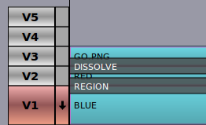
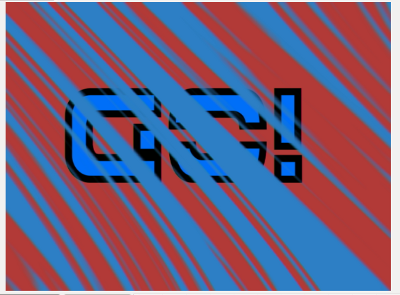
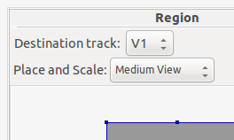

Creating Composited Images
Flowblade Movie Editor uses Compositors to mix images from two different tracks. By combining multiple tracks and multiple Compositors complex composite images can be achieved.
Compositors have a Source track and a Destination track. On the Timeline Compositor is displayed as a dark rectangular object that is displayed on top of two tracks. Source track is always the one above Compositor, but Destination track may be any of the tracks below it.
Parameters defining the resulting composite are edited in the Compositors tab.
There is a subtype of Compositors called Blenders. Blenders do the standard blends like Add, Softlight and Darken, but offer no transformations, nor any method to control the amount of blend.
Compositor Workflow
- Creating a Compositor
- Click Right Mouse on any clip on tracks from V5 to V2 and select for example Add Compositor -> Dissolve or Add Blender -> Softlight from popupmenu to create a new Compositor.
- Trimmimg or Moving a Compositor
- To trim Compositor start and end points: Press and drag Left Mouse near either end of Compositor on Timeline.
- To move Compositor: Press and drag Left Mouse in the middle of Compositor on Timeline.
- Editing Compositor Parameters in Compositors Tab
- Double click Compositor with Left Mouse.
- Click Right Mouse on any Compositor and select Open In Compositor Editor
- Edit parameters using value editors.
- Deleting Compositor
- Click Left Mouse on any Compositor to select it and press Delete key.
Compositor are executed from top to bottom
In Flowblade Movie Editor the order of rendering is top-to-bottom, instead of bottom-to-top like in Gimp or Photoshop. When attempting certain type of multilayer composites this yields results that seem unintuitive, unless the user is aware of rendering order of Compositors.Rendering A Composited Frame
- For each frame it is checked if there is a Compositor covering this frame that has track V5 as Source track.
- If such Compositor is found, do composite on Destination track.
- If next track is Source of Compositor covering this frame, that Compositor is rendered.
- This is done until there is track that isn't a Source track of any Compositor. That frame on last this track may already been a Destination of a Compositor.
EXAMPLE: Creating a 3-layer composite
In this example we demonstrate how top-to-bottom Compositor order affects compositing. We are trying to make word 'GO' apperar on top of 2-color background made by combining red and blue Color Clips using 'Free Stripes' wipe.
To make alpha transparency work the GO.PNG graphic has to composited using 'Dissolve'.
_clips: RED and BLUE Color Clips and GO.PNG graphic with alpha transparency_
_Desired result_
Gimp/Photoshop style layer order yields wrong result
Here we have arranged clips on the tracks as we would arrange layers in Gimp.
_Gimp style layer order_
What happens here is that first 'GO.PNG' is composited on 'RED' Color Clip, and the resulting image is composited using 'Free Stripes' wipe on top of 'BLUE' Color Clip. We get the wrong result.
_Wrong result_
Correct layer order when compositing order is top-to-bottom
Here we have arranged clips in correct order for the desired result.
_Correct layer order_

Here 'RED' Color Clip is first composited using 'Free Stripes' wipe on 'BLUE' Color Clip. After that 'GO.PNG' is composited on top of the resulting image (that is already rendered on track V1) using 'Dissolve' to get final output image.
_Destination track in 'Region' Compositor is V1, Source track is V3_
 _Correct result_